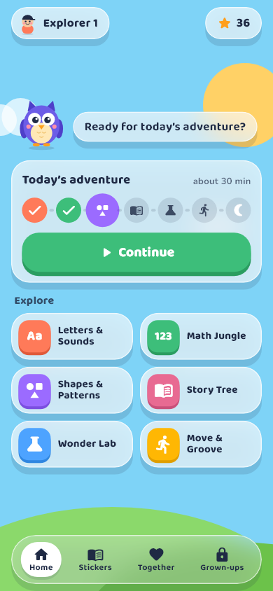
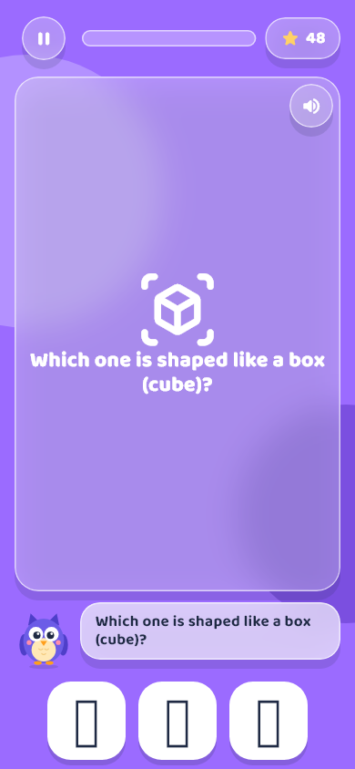
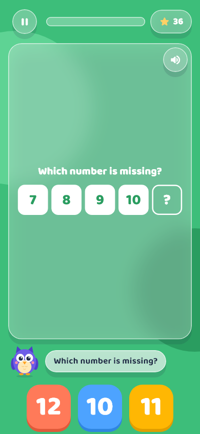
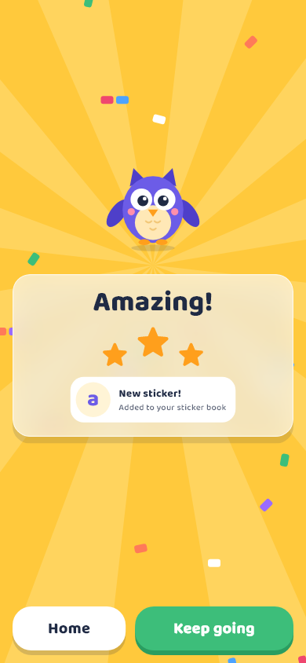
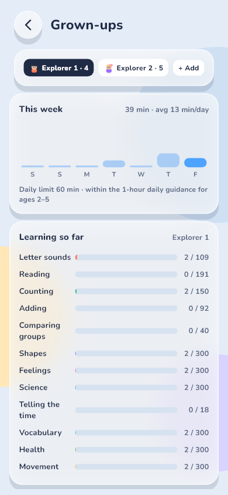

Learn, play and grow with Tiko
A calm, ad-free learning adventure for children aged 3 to 6. Phonics, numbers, shapes, stories, science and movement, in short daily sessions that end with a rest.
Eight worlds, 2,400 levels
Every world has 300 levels that grow with your child: from first sounds to reading and spelling words, and from counting to 3 to adding to 20 and telling the time.
Letters & Sounds
Systematic phonics (s a t p i n first), tracing every letter, blending, reading and spelling words, rhymes and tricky words.
Math Jungle
Counting to 20, quick looks, making 10, adding and taking away, counting in 2s, 5s and 10s, and telling the time.
Shapes & Patterns
Shapes turned and resized, 3D shapes, patterns, odd one out, sizes and position words like on, under and next to.
Word Garden
Vocabulary for little talkers: naming things, opposites, colours, sorting into groups and what things are for.
Story Tree
180 original read-along stories with Momo the turtle, and 80 feelings scenarios that build kindness.
Wonder Lab
25 science topics. Children predict, test and explain. Every guess is welcomed.
Healthy Me
Healthy habits, staying safe, my body, calm and kind feelings, my day, and days of the week.
Move & Groove
40 short movement and calm-breathing breaks, with Tiko showing the way.
A look inside





Healthy screen time
A guided daily adventure (15 to 60 minutes) ends on a calm Rest screen. Daily limits, a bedtime lock and optional reminders for grown-ups are built in.
Safe by design
No ads, no chat, no tracking, no accounts for children. A parental gate protects settings and purchases.
Learns with your child
Difficulty adapts, hints step in gently, and skills come back for review after 1, 3, 7 and 21 days.
Play together
Ideas for talking and playing together, on and off the screen, based on what your child just learned.